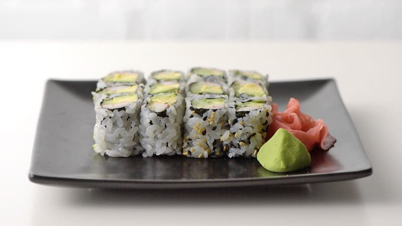
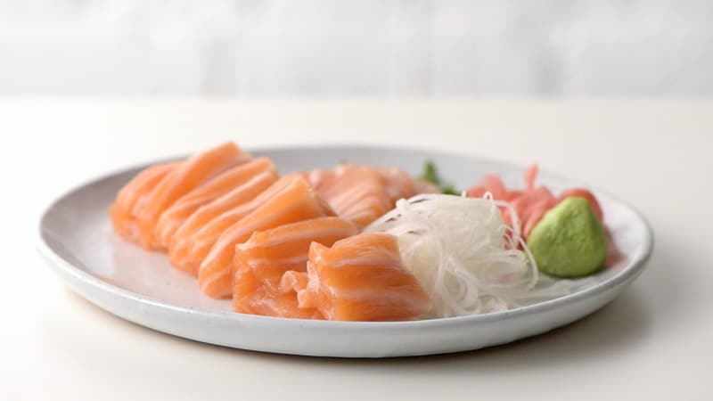

uramaki
Cijena: 55,00 kn
Uramaki izgledaju prvim dojmom na obrnuto zamotan sushi roll s slojem riže izvana i listom nori iznutra, i obično uključuju avokado, imitaciju rakova, krastavca, a ponekad i tobiko (ikra letećih riba).
maki
Cijena: 65,00 kn
Maki je izrezan rolovani sushi, tradicionalno napravljen s listom nori, omotan oko sloja riže, povrća i ribe, zatim zamotan pomoću posebnog bambusovog tepiha i izrezan na 6-8 komada. Postoje razne maki suši role koje možete naručiti u rasponu veličina i stila.
nigiri
Cijena: 75,00 kn

Nigiri je stil suši koji se pravi ručno oblikovanjem kuglice od riže od vinove loze i preljevanjem kriške sirove ribe. Obično se poslužuje s dva komada i može se jesti rukama.
chirashi
Cijena: 80,00 kn

Chirashi, što znači "raspršeno", je zdjela riže s vinima s mješavinom sirove ribe (obično kuharskog izbora) i raznim ukrasima. To je brzo i lako napraviti i pogodno je za jelo. U Japanu se preljevi razlikuju ovisno o regiji u kojoj se poslužuju i često se jede na Hinamatsuriju, Danu djevojčica ili Danu lutaka, poseban dan u Japanu koji se slavi 3. ožujka.